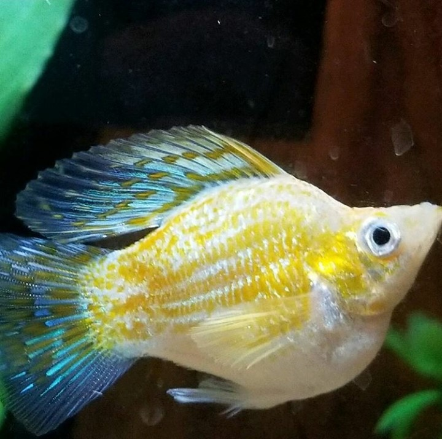
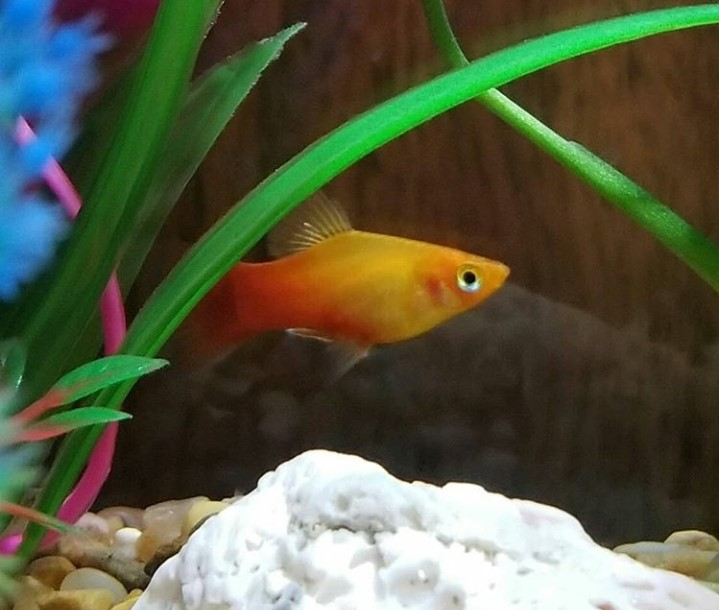
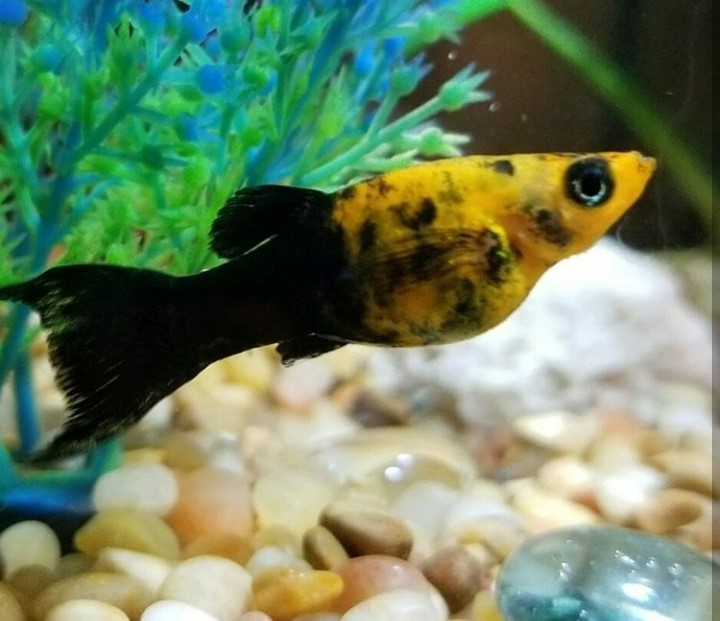
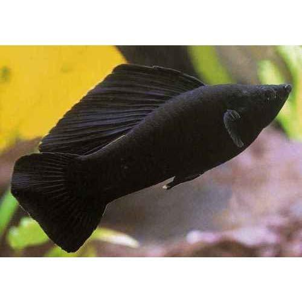

A few years ago my older sister decided that she wanted to take on fish owning and I immediately fell in love! However, at the start we weren't too great at it.
We had a lot of fun naming our fish, with the first set being
Fat Pat Lobo Black Eye Willie Howard Stern   
Since we were kind of awful at first though, Black Eye Willie and Howard Stern only lived for a few weeks, but Lobo and Fat Pat survived for over a year!
During this time, we decided to also become snail owners, starting off with Radish, then Saturday, then 2%, who is still with us today!
I'm still learning as a fish owner as it is a lot harder than it looks, and I'm hoping that one day when I have a house of my own I can have a room full of successful fish tanks.